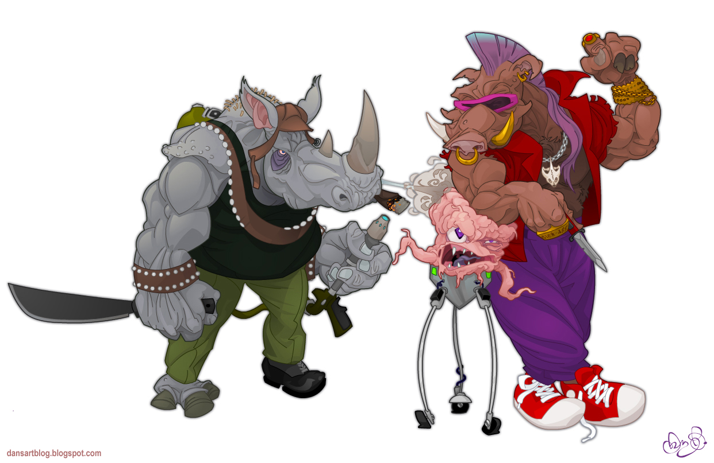

( for :clojure )
How to Dodge Falling Prices in a Stateless World
(what-is? :clojure)
- it's a creation of Rich Hickey (circa 2007)
- it's a Lisp
- it's a Functional language
- it's a Java Virtual Machine (JVM) language
- it's a concurrent language
- it's open source (Clojure and Java code)
- influenced by Common Lisp, Erlang, Haskell, ML, Prolog, Scheme, Java
(who-is? "Rich Hickey")
- Independent software dude
- RailsConf 2012 Keynote: "Simplicity Matters" http://www.youtube.com/watch?v=rI8tNMsozo0
(clojure (is :lisp))
- Syntax uses Prefix (rather than Infix) notation
;; functions precede arguments
(+ 1 2)
;; operators do too
(+ 1 2 3 4 5 6)
;; and lists of lists!
(dec (+ 1 2 3))
;; and list that don't eval
'(1 2 3 4)
Parenthesis ... and a few brackets and curlies too
;; define a vector var with a literal
(def v [1 2 3 4])
;; define a map with a literal
(def m { :one 1 :two 2 :three 3 })
(clojure (is :functional))
verb (function) oriented instead of noun (object) oriented
functions can be called and defined
;; define a function
(defn walmart-greeting []
"watch out for falling prices!")
;; call a function
(walmart-greeting)
functions can be returned from functions
;; define a function that returns a function
(defn walmart-greeting []
(fn [] "watch out for falling prices!"))
;; get it and bind it
(def greet-me (walmart-greeting))
;; call it!
(greet-me)
functions can be arguments to functions
;; create a higher order function
(defn greet-me [greeter] (greeter))
;; call it with an anonymous function
(greet-me (fn [] "watch out for falling prices!"))
looping and iteration via recursive function calls
;; return a sequence of falling prices
(defn falling-prices [result x]
(if (zero? x)
result
(recur (conj result x) (dec x))))
;; make it happen
(falling-prices [] 5)
lexical scoping / closures
;; create a function that closes over local name
(defn make-greeting [place]
(let [walmart place]
(fn [welcome-to]
(str welcome-to walmart))))
;; bind it
(def greeting (make-greeting "Walmart!"))
;; call it
(greeting "Welcome to ")
IMMUTABLE...but more on that later...
(clojure (is :jvm-enabled))
- compiles to Java bytecode
- run time performance comparable to Java
- seamless interop with Java and other JVM languages
;; use java.lang.Math#sqrt static method
(Math/sqrt 9)
;; instantiate Java objects
(java.awt.Point. 10 20)
;; and call instance methods on them
(.x (java.awt.Point. 10 20))
;; with parameters even
(.divide (java.math.BigDecimal. "42") 2M)
Oh and by the way...
- works with .NET (ClojureCLR)
- can compile to JavaScript (ClojureScript)
- runs on the ActionScript VM (las3r)
- python flavor too (clojure-py)
(clojure (is :concurrent))
A Parallel Universe
- Divide work
- Take advantage multiple of cores and CPUs
Life doesn't run on a single thread of execution
- Reading inconsistent data
- Losing updates (ie. updating inconsistent data)
- Dirty Reads
- Read-Write
- a thread reads data that another thread is updating
- when the update is finished, data is no longer valid
- Phantom Reads
- Read-Write
- a thread reads data that's been deleted
- Lost Updates
- Write-Write
- update by one thread overwritten by other
- Ex. two threads updating a counter
So there are problems ...
Are there answers ?
Locks!
problem solved by locking shared state before mutation
Locks create blocks
- lose concurrency / throughput
- wasteful, excessive, and pessimistic
- even for simple reads, must obtain a lock
Locks complect code
- complexity of code proportional to # of locks needed
- developers must remember to use them
- and in which order to lock and release
- bugs due to missing locks can be hard to track down
- complexity costs time and money
- a thread must obtain multiple locks to make coordinated changes
Locks cause conflicts / contention
- Deadlock
- Starvation
- Orphan Locks
A conflated idea
The greatest trick that OO languages ever pulled was convincing the world that identity is the same as state
OOP thinks in terms of stateful "things" with destructive methods
A Reinvention
- Separation of state and identity
- Immutable things that don't change once created
- Simulate change by creating new things
- Identities reference different things over time
Two Ideas Toward a Solution
- Data objects must be immutable
- if identity is updated, other threads have access to old (albeit stale) data
- Identities only given indirect access to memory via managed references
- Language runtime can provide constructs to:
- ensure safe writes to shared data
- signal errors when writes fail
- enforce other constraints when writes are made
The Clojure Way
- All core Clojure data structures are immutable
- Managed References
- Manage access to shared (volatile) memory
- Software Transactional Memory (STM)
- Concurrency control mechanism
- Uses transactions, similar to Databases
- Multiversion Concurrency Control (MVCC)
- Readers don't block readers or writers
- Writers don't block readers
- No need for locks
- Optimistic approach, provides increased concurrency
STM is ACID. Sort of.
-
(A)tomic:
All changes happen, or the transaction fails and retries. Coordinated changes on multiple identities
-
(C)onsistent:
provides validator functions to check consistency of data and rollback transaction on failure
-
(I)solated:
mutated data within a transaction is only visible to the thread that made the change
-
(D)urable:
Not Applicable
Managed Reference Primitives
Represent identities that change values over time
- Ref (shared, synchronous, coordinated)
- Agent (shared, asynchronous, independent)
- Atom (shared, synchronous, independent)
- Var (thread-local / isolated)
Refs
Shared, synchronous, and coordinated changes
;; create the ref
(def foreclosed-homes (ref {}))
;; deref the ref with a handy little macro
@foreclosed-homes
- Mutation must occur within an STM transaction
- Mutate with REF-SET, ALTER, and COMMUTE functions
ref-set
- (ref-set ref new-value)
- set the ref to the new value
- needs a transaction; or exception thrown
- handy when new val doesn't depend on old
;; create transaction with the 'dosync' macro
(dosync
(ref-set foreclosed-homes {}))
alter
- (alter ref function & args)
- atomic op for common read-process-write scenario
;; create new buyer
(defn new-buyer [id login bid]
{:id id
:login login
:net-worth net-worth})
(defn add-buyer [login bid]
(dosync
(let [counter (count @buyers)
buyer (new-buyer (inc counter) login bid)]
(alter buyers assoc login buyer))))
Agents

Shared, asynchronous, and independent changes
;; create the agent
(def kungfu-skill-level (agent 0))
;; deref the agent with a handy little macro
@kungfu-skill-level
- Does not need to be wrapped in an STM transaction
- Mutate with SEND and SEND-OFF functions
- An "Action" processes the new value on a separate thread
- Multiple Agents can coordinate via AWAIT and AWAIT-FOR
More about Actions
- Plain Clojure func that can accept a variable # of args
- Run on a (Java) thread pool
- One Action per Agent at a given time
- Derefing an Agent before Action completes, yields old val
send
- (send the-agent the-action & more-args)
- uses a fixed size thread pool
- non-blocking
- actions are queued if pool is exhausted
- for CPU heavy actions that don't block
(send kungfu-skill-level + 1000)
send-off
- (send-off the-agent the-action & more-args)
- same as send, but can handle blocking actions
- dynamic thread pool
(send-off kungfu-skill-level + 1000)
Ants!
by Rich Hickey
- a square world of cells
- each cell holds a Ref to what it contains (food, ant, pheromones, home base)
- Ants are represented by Agents
- Ants are sent "behave" Actions
- picks a random thing for ant to do (move, turn, grab, drop food)
- muutates the world of cells via a transaction
- sends itself another behave action
- An Agent paints the world
- An Agent evaporates the pheromones
Sources and Material
- Clojure in Action, 2011 (Amit Rathore)
- The Joy of Clojure, 2011 (Michael Fogus, Chris Houser)
- http://www.clojure.org/
- http://clojuredocs.org/
- http://www.4clojure.com/
- #clojure (irc.freenode.net)